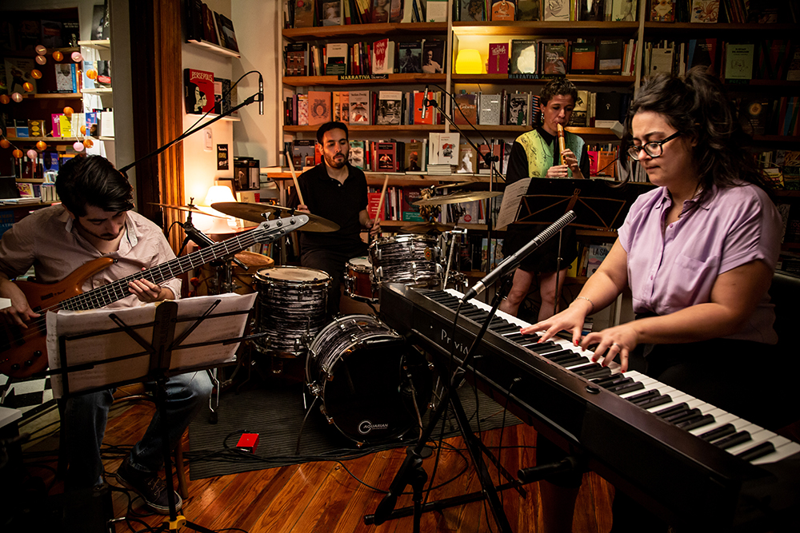
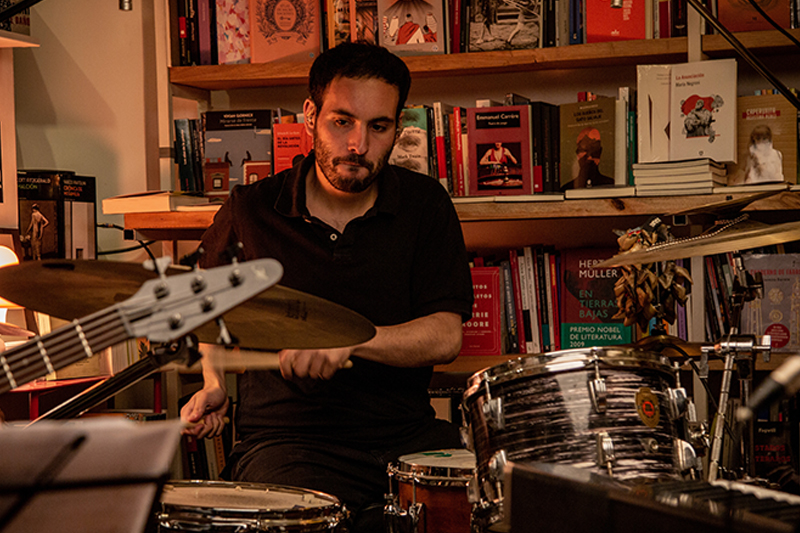

Sobre nosotrxs

Proyecto FolklorICA es un trío que explora la música folklórica desde un espacio expresivo íntimo y personal. Su repertorio es una búsqueda de posibilidades interpretativas que abarca adaptaciones para acompañamiento de bajo solo, piano y voz, y formato trío con invitadxs. El proyecto es una invitación a adentrarse en un universo sonoro en el que dialogan la herencia folklórica y la expresión sensible. Proyecto FolklorICA propone una puerta de entrada a ambos mundos. El trío está formado por Brenda Almirall (voz, piano, arreglos y composición), Jacobo Cargua Guerrero (bajo) y Germán “Cocó” Ibarra (percusión). Artista Invitada, Nati Link (quena).

Brenda Almirall

Jacobo Garcia Cargua
Germán Coco Gutierrez